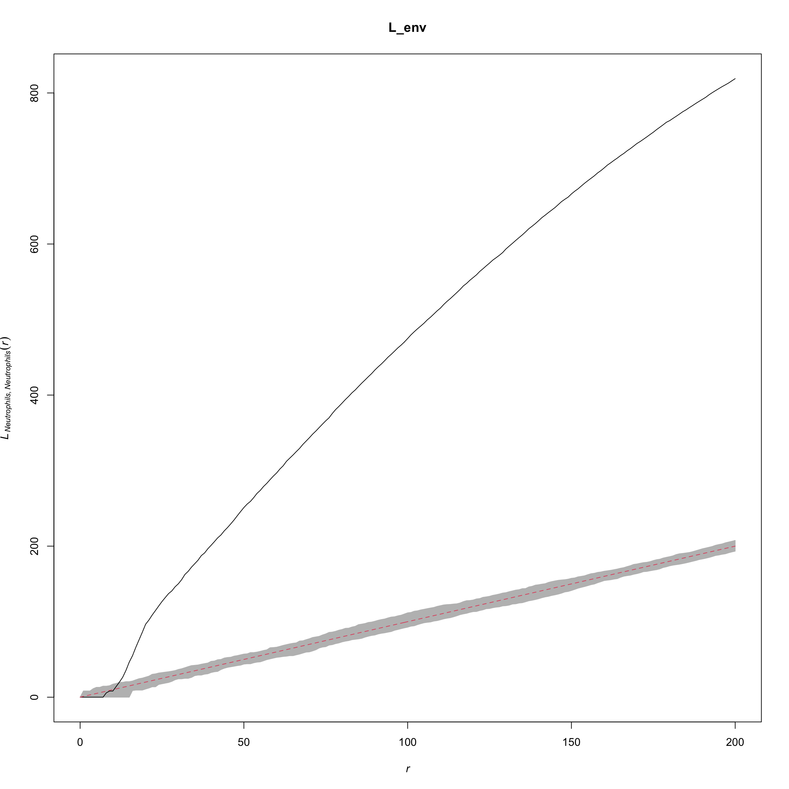
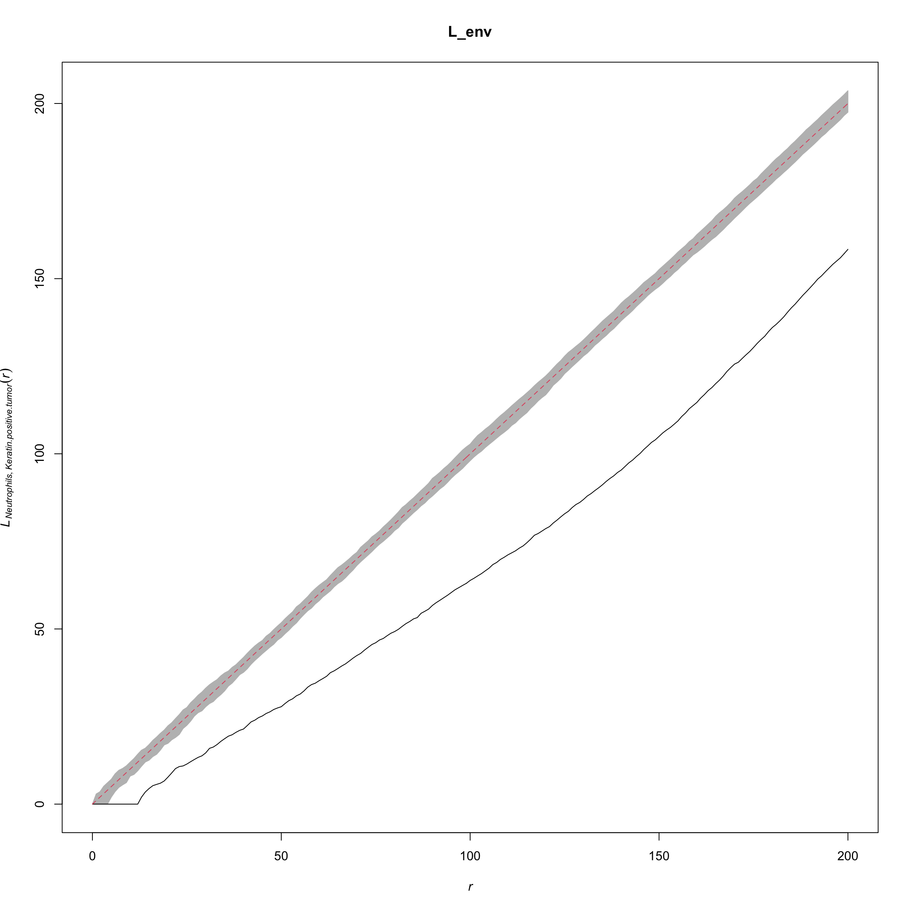

library(raster)
library(plyr)
library(ggpubr)
library(spatstat)
source("functions/image_analysis_function.R")mibi.sce <- readRDS("../../sc-targeted-proteomics/data/mibi.sce_withDR.rds")
colnames(mibi.sce) <- paste(mibi.sce$SampleID, mibi.sce$cellLabelInImage, sep = "_")
mibi.sce$cellTypes <- ifelse(as.character(mibi.sce$immune_group) != "not immune",
as.character(mibi.sce$immune_group),
as.character(mibi.sce$tumor_group))
mibi.sce$cellTypes_group <- ifelse(as.character(mibi.sce$immune_group) != "not immune",
"Micro-environment",
"Tumour")
selected_chanel_mibi <- rownames(mibi.sce)[rowData(mibi.sce)$is_protein == 1]
interested_protein <- rownames(mibi.sce)[rowData(mibi.sce)$is_protein == 1]
interested_protein <- interested_protein[!interested_protein %in% c("OX40")]
interested_protein <- c("SMA", interested_protein)
tiff_name_list <- list.files("../../sc-targeted-proteomics/data/TNBC_shareCellData/", pattern = ".tiff")
tiff_name_list <- tiff_name_list[-24]cellTypes_group_mibi_color <- tableau_color_pal("Tableau 10")(length(unique(mibi.sce$cellTypes_group)))
cellTypes_group_mibi_color <- c(cellTypes_group_mibi_color, "black")
names(cellTypes_group_mibi_color) <- c(unique(mibi.sce$cellTypes_group)[c(2,1)],
"Background")
cellTypes_mibi_color <- tableau_color_pal("Classic 20")(length(unique(mibi.sce$cellTypes)))
cellTypes_mibi_color <- c(cellTypes_mibi_color, "black")
names(cellTypes_mibi_color) <- c(unique(mibi.sce$cellTypes), "Background")# example
s = 27
str_name <- paste("../../sc-targeted-proteomics/data/TNBC_shareCellData/", tiff_name_list[s], sep = "")
cat("The .tiff file name is:")## The .tiff file name is:print(tiff_name_list[s])## [1] "p34_labeledcellData.tiff"sample_id <- as.numeric(gsub("p", "", gsub("_labeledcellData.tiff", "", tiff_name_list[s])))
r <- raster(str_name)
# create an rater object
r## class : RasterLayer
## dimensions : 2048, 2048, 4194304 (nrow, ncol, ncell)
## resolution : 1, 1 (x, y)
## extent : 0, 2048, 0, 2048 (xmin, xmax, ymin, ymax)
## crs : NA
## source : /Users/yingxinlin/Dropbox (Sydney Uni)/PhDProj/BANFF2020/sc-targeted-proteomics/data/TNBC_shareCellData/p34_labeledcellData.tiff
## names : p34_labeledcellData
## values : 0, 65535 (min, max)p_sce <- mibi.sce[, mibi.sce$SampleID == sample_id]
p_sce <- p_sce[interested_protein, ]
exprsMat <- assay(p_sce, "mibi_exprs")
group_raster_values <- mapValueToCoord(r,
p_sce$cellLabelInImage,
p_sce$cellTypes_group)
cellTypes_raster_values <- mapValueToCoord(r,
p_sce$cellLabelInImage,
p_sce$cellTypes)
ddf <- rasterToPoints(r)
ddf <- data.frame(ddf)
colnames(ddf) <- c("X", "Y", "value")
ddf$cellType_group <- group_raster_values
ddf$cellType <- cellTypes_raster_values
g_cellGroup <- ggplot(NULL) +
geom_raster(data = ddf, aes(X, Y, fill = as.factor(cellType_group))) +
theme_minimal() +
scale_fill_manual(values = cellTypes_group_mibi_color) +
coord_quickmap() +
theme(aspect.ratio = 1, legend.position = "right") +
labs(fill = "Cell Type")
g_cellTypes <- ggplot(NULL) +
geom_raster(data = ddf, aes(X, Y, fill = as.factor(cellType))) +
theme_minimal() +
scale_fill_manual(values = cellTypes_mibi_color) +
coord_quickmap() +
theme(aspect.ratio = 1, legend.position = "right") +
labs(fill = "Cell Type")
ggarrange(g_cellGroup, g_cellTypes, ncol = 2, nrow = 1, align = "hv")ppp objectcoord_r <- rasterToPoints(r)
center_r_x <- aggregate(coord_r[, 1], list(coord_r[, 3]), median)
group <- center_r_x$Group.1
center_r_x <- center_r_x$x
center_r_y <- aggregate(coord_r[, 2], list(coord_r[, 3]), median)$x
center_r <- data.frame(x = center_r_x, y = center_r_y, group = group)
cell_label <- raster::values(r)
notInLabelnotInLabel <- unique(cell_label[!cell_label %in% p_sce$cellLabelInImage])
r_cellType <- mapvalues((center_r$group),
from = notInLabelnotInLabel,
to = rep(0, length(notInLabelnotInLabel)))
r_cellType <- mapvalues((r_cellType),
from = p_sce$cellLabelInImage,
to = p_sce$cellTypes)
center_r$cellTypes <- r_cellType
center_r <- center_r[center_r$cellTypes != "0", ]
keep <- center_r$cellTypes != "Unidentified"
cell_points <- ppp(x = center_r[keep, 1],
y = center_r[keep, 2],
check = FALSE,
yrange = c(0, 2048), xrange = c(0, 2048),
marks = as.factor(center_r[keep, ]$cellTypes))
cell_points_cts <- ppp(x = center_r[, 1], y = center_r[, 2],
check = FALSE,
yrange = c(0, round(max(coord_r[, 2]))),
xrange = c(0, round(max(coord_r[, 1]))),
marks = t(exprsMat))d <- pairdist(cell_points_cts, squared = FALSE)
diag(d) <- Inf
print("Calculate moran'stats")## [1] "Calculate moran'stats"w <- 1/d
moran_cor <- list()
for (i in 1:nrow(exprsMat)) {
cat(i, "...")
moran_cor[[i]] <- try(ape::Moran.I(exprsMat[i, ], w)$observed, silent = TRUE)
if (is(moran_cor[[i]], "try-error")) {
moran_cor[[i]] <- NA
}
}## 1 ...2 ...3 ...4 ...5 ...6 ...7 ...8 ...9 ...10 ...11 ...12 ...13 ...14 ...15 ...16 ...17 ...18 ...19 ...20 ...21 ...22 ...23 ...24 ...25 ...26 ...27 ...28 ...29 ...30 ...31 ...32 ...33 ...34 ...35 ...36 ...37 ...38 ...names(moran_cor) <- rownames(exprsMat)
moran_cor <- unlist(moran_cor)
sort(moran_cor)## CD209 Lag3 p53 IDO PD-L1
## -0.0002428817 0.0017225804 0.0035598651 0.0047270526 0.0063576773
## CD31 CD20 PD1 Vimentin CD3
## 0.0105429322 0.0109012654 0.0120904686 0.0129673987 0.0172632383
## CD8 CSF-1R CD4 CD11c CD68
## 0.0172774263 0.0198522253 0.0222447901 0.0252125266 0.0280727126
## SMA Keratin6 CD16 Keratin17 CD45
## 0.0282640638 0.0437609190 0.0500115943 0.0511392611 0.0538109643
## HLA-DR phospho-S6 CD138 Beta catenin HLA_Class_1
## 0.0561101252 0.0598209782 0.0755679125 0.0798467553 0.0858426310
## H3K9ac H3K27me3 EGFR CD11b Pan-Keratin
## 0.0880518716 0.1051013600 0.1092800351 0.1137752471 0.1153218565
## CD45RO CD63 MPO
## 0.1201093367 0.1927649007 0.3076854292exprsMat_in_raster <- apply(exprsMat, 1, function(x) {
mapValueToCoord(r,
p_sce$cellLabelInImage,
x,
cont = TRUE)
})
g_MPO <- ggplot(NULL) +
geom_raster(data = ddf, aes(X, Y,
fill = scale(exprsMat_in_raster[, "MPO"]))) +
theme_minimal() +
scale_fill_gradientn(colours = viridis::viridis(120)[c(seq(1, 40, 2), 41:120)]) +
coord_quickmap() +
theme(aspect.ratio = 1, legend.position = "right") +
labs(fill = "MPO")
g_CD8 <- ggplot(NULL) +
geom_raster(data = ddf, aes(X, Y,
fill = scale(exprsMat_in_raster[, "CD8"]))) +
theme_minimal() +
scale_fill_gradientn(colours = viridis::viridis(120)[c(seq(1, 40, 2), 41:120)]) +
coord_quickmap() +
theme(aspect.ratio = 1, legend.position = "right") +
labs(fill = "CD8")
ggarrange(g_MPO, g_CD8, align = "hv", ncol = 2)nncorr_protein <- nncorr(cell_points_cts)["correlation", ]
nncorr_protein## SMA Vimentin B7H3 FoxP3 Lag3 CD4
## 0.4052723 0.2548168 NA NA 0.1606185 0.3639350
## CD16 CD56 PD1 CD31 PD-L1 EGFR
## 0.5324587 NA 0.3725052 0.2341071 0.6420517 0.8235187
## Ki67 CD209 CD11c CD138 CD163 CD68
## NA NA 0.4182438 0.5859682 NA 0.5251670
## CSF-1R CD8 CD3 IDO Keratin17 CD63
## 0.2855042 0.3268527 0.3493794 0.2801131 0.6492494 0.6554553
## CD45RO CD20 p53 Beta catenin HLA-DR CD11b
## 0.5724436 0.3654035 0.1027180 0.6770375 0.5709631 0.5313023
## CD45 H3K9ac Pan-Keratin H3K27me3 phospho-S6 MPO
## 0.4819535 0.5266738 0.8753919 0.5294520 0.5281559 0.8957507
## Keratin6 HLA_Class_1
## 0.7372707 0.7280990nn_which_res <- nnwhich(cell_points_cts)
dtp <- data.frame(MPO = marks(cell_points_cts)[, "MPO"],
MPO_NN_k1 = marks(cell_points_cts)[nn_which_res, "MPO"],
CD8 = marks(cell_points_cts)[, "CD8"],
CD8_NN_k1 = marks(cell_points_cts)[nn_which_res, "CD8"])
g1 <- ggplot(dtp, aes(x = MPO, y = MPO_NN_k1)) +
geom_point(alpha = 0.5, size = 2) +
theme_bw() +
scale_color_viridis_c() +
theme(aspect.ratio = 1, legend.position = "right",
panel.grid = element_blank(),
text = element_text(size = 14)) +
ylab("MPO (1NN)")
g2 <- ggplot(dtp, aes(x = CD8, y = CD8_NN_k1)) +
geom_point(alpha = 0.5, size = 2) +
theme_bw() +
scale_color_viridis_c() +
theme(aspect.ratio = 1, legend.position = "right",
panel.grid = element_blank(),
text = element_text(size = 14)) +
ylab("CD8 (1NN)")
ggarrange(g1, g2, ncol = 2, nrow = 1, align = "hv")tab <- table(center_r[keep, ]$cellTypes)
cellTypes_toTest <- names(tab[which(tab > 10)])
cellTypes_pair <- expand.grid(cellTypes_toTest, cellTypes_toTest,
stringsAsFactors = FALSE)
print("Calculate NN info")## [1] "Calculate NN info"# Calcualte the pairwise distance
d <- pairdist(cell_points, squared = FALSE)
diag(d) <- Inf
nn_list <- apply(d, 1, function(x) which(x < 50))
nn_list_cellTypes <- lapply(seq_along(nn_list), function(idx) {
if (length(nn_list[[idx]]) > 0) {
paste(center_r[keep, ]$cellTypes[idx],
center_r[keep, ]$cellTypes[nn_list[[idx]]], sep = "_")
}
})
nn_list_cellTypes <- unlist(nn_list_cellTypes)
nn_list_cellTypes <- rearrange_string(nn_list_cellTypes)
nn_list_cellTypes <- table(nn_list_cellTypes)
cat("Top 10 cell type interaction")## Top 10 cell type interactionsort(nn_list_cellTypes/sum(nn_list_cellTypes), decreasing = TRUE)[1:10]## nn_list_cellTypes
## Keratin-positive tumor_Keratin-positive tumor
## 0.30254477
## Neutrophils_Neutrophils
## 0.22207823
## Macrophages_Macrophages
## 0.06880302
## Keratin-positive tumor_Macrophages
## 0.06055608
## Macrophages_Other immune
## 0.04971725
## Other immune_Other immune
## 0.04936381
## CD8_Other immune
## 0.03216305
## CD8_Macrophages
## 0.02921772
## Keratin-positive tumor_Other immune
## 0.02462300
## Keratin-positive tumor_Neutrophils
## 0.02297361print("Calculate L'stats (cellType1)")## [1] "Calculate L'stats (cellType1)"L_patient <- list()
for (i in 1:nrow(cellTypes_pair)) {
# cat(cellTypes_pair[i,], "...")
L_patient[[i]] <- L_stats(cell_points,
from = cellTypes_pair[i, 1],
to = cellTypes_pair[i, 2],
L_dist = 50)
}
L_patient <- do.call(c, L_patient)
names(L_patient) <- paste(cellTypes_pair[, 1], cellTypes_pair[, 2], sep = "_")L <- spatstat::Lcross(cell_points,
from = "Neutrophils",
to = "Neutrophils",
verbose = FALSE,
correction = "best")
L_env <- envelope(cell_points, Lcross,
from = "Neutrophils",
to = "Neutrophils")## Generating 99 simulations of CSR ...
## 1, 2, 3, 4, 5, 6, 7, 8, 9, 10, 11, 12, 13, 14, 15, 16, 17, 18, 19, 20, 21, 22, 23, 24, 25, 26, 27, 28, 29, 30, 31, 32, 33, 34, 35, 36, 37, 38, 39, 40,
## 41, 42, 43, 44, 45, 46, 47, 48, 49, 50, 51, 52, 53, 54, 55, 56, 57, 58, 59, 60, 61, 62, 63, 64, 65, 66, 67, 68, 69, 70, 71, 72, 73, 74, 75, 76, 77, 78, 79, 80,
## 81, 82, 83, 84, 85, 86, 87, 88, 89, 90, 91, 92, 93, 94, 95, 96, 97, 98, 99.
##
## Done.plot(L_env, xlim = c(0, 200), legend = FALSE)
L <- spatstat::Lcross(cell_points,
from = "Neutrophils",
to = "Keratin-positive tumor",
verbose = FALSE,
correction = "best")
L_env <- envelope(cell_points, Lcross,
from = "Neutrophils",
to = "Keratin-positive tumor")## Generating 99 simulations of CSR ...
## 1, 2, 3, 4, 5, 6, 7, 8, 9, 10, 11, 12, 13, 14, 15, 16, 17, 18, 19, 20, 21, 22, 23, 24, 25, 26, 27, 28, 29, 30, 31, 32, 33, 34, 35, 36, 37, 38, 39, 40,
## 41, 42, 43, 44, 45, 46, 47, 48, 49, 50, 51, 52, 53, 54, 55, 56, 57, 58, 59, 60, 61, 62, 63, 64, 65, 66, 67, 68, 69, 70, 71, 72, 73, 74, 75, 76, 77, 78, 79, 80,
## 81, 82, 83, 84, 85, 86, 87, 88, 89, 90, 91, 92, 93, 94, 95, 96, 97, 98, 99.
##
## Done.plot(L_env, xlim = c(0, 200), legend = FALSE)
# The following for loop will generate the spatial features for all images
# in MIBI-TOF data
spat_stats_list_all <- list()
for (s in 1:length(tiff_name_list)) {
str_name <- paste("../../data/TNBC_shareCellData/", tiff_name_list[s], sep = "")
sample_id <- as.numeric(gsub("p", "", gsub("_labeledcellData.tiff", "", tiff_name_list[s])))
print(str_name)
print(sample_id)
r <- raster(str_name)
r
p_sce <- mibi.sce[, mibi.sce$SampleID == sample_id]
p_sce <- p_sce[interested_protein, ]
exprsMat <- assay(p_sce, "mibi_exprs")
print(table(p_sce$immune_group))
group_raster_values <- mapValueToCoord(r,
p_sce$cellLabelInImage,
p_sce$cellTypes_group)
cellTypes_raster_values <- mapValueToCoord(r,
p_sce$cellLabelInImage,
p_sce$cellTypes)
ddf <- rasterToPoints(r)
ddf <- data.frame(ddf)
colnames(ddf) <- c("X", "Y", "value")
ddf$cellType_group <- group_raster_values
ddf$cellType <- cellTypes_raster_values
coord_r <- rasterToPoints(r)
center_r_x <- aggregate(coord_r[, 1], list(coord_r[, 3]), median)
group <- center_r_x$Group.1
center_r_x <- center_r_x$x
center_r_y <- aggregate(coord_r[, 2], list(coord_r[, 3]), median)$x
center_r <- data.frame(x = center_r_x, y = center_r_y, group = group)
cell_label <- raster::values(r)
notInLabelnotInLabel <- unique(cell_label[!cell_label %in% p_sce$cellLabelInImage])
r_cellType_group <- mapvalues((center_r$group),
from = notInLabelnotInLabel,
to = rep(0, length(notInLabelnotInLabel)))
r_cellType_group <- mapvalues((r_cellType_group),
from = p_sce$cellLabelInImage,
to = p_sce$cellTypes_group)
center_r$cellTypes <- r_cellType_group
r_cellType <- mapvalues((center_r$group),
from = notInLabelnotInLabel,
to = rep(0, length(notInLabelnotInLabel)))
r_cellType <- mapvalues((r_cellType),
from = p_sce$cellLabelInImage,
to = p_sce$cellTypes)
center_r$cellTypes2 <- r_cellType
center_r <- center_r[center_r$cellTypes != "0", ]
print("For oringinal label")
keep <- center_r$cellTypes2 != "Unidentified"
cell_points <- ppp(x = center_r[keep, 1],
y = center_r[keep, 2],
check = FALSE,
yrange = c(0, 2048), xrange = c(0, 2048),
marks = as.factor(center_r[keep, ]$cellTypes2))
tab <- table(center_r[keep, ]$cellTypes2)
cellTypes_toTest <- names(tab[which(tab > 10)])
cellTypes_pair <- expand.grid(cellTypes_toTest, cellTypes_toTest,
stringsAsFactors = FALSE)
print("Calculate NN info")
# Calcualte the pairwise distance
d <- pairdist(cell_points, squared = FALSE)
diag(d) <- Inf
nn_list <- apply(d, 1, function(x) which(x < 50))
nn_list_cellTypes <- lapply(seq_along(nn_list), function(idx) {
if (length(nn_list[[idx]]) > 0) {
paste(center_r[keep, ]$cellTypes2[idx],
center_r[keep, ]$cellTypes2[nn_list[[idx]]], sep = "_")
}
})
nn_list_cellTypes <- unlist(nn_list_cellTypes)
nn_list_cellTypes <- rearrange_string(nn_list_cellTypes)
nn_list_cellTypes <- table(nn_list_cellTypes)
print("Calculate L'stats (cellType1)")
L_patient <- list()
for (i in 1:nrow(cellTypes_pair)) {
# cat(cellTypes_pair[i,], "...")
L_patient[[i]] <- L_stats(cell_points,
from = cellTypes_pair[i, 1],
to = cellTypes_pair[i, 2],
L_dist = 50)
}
L_patient <- do.call(c, L_patient)
names(L_patient) <- paste(cellTypes_pair[, 1], cellTypes_pair[, 2], sep = "_")
print("Calculate ANN")
ann <- list()
for (i in 1:length(tab)) {
center_r_tmp <- center_r[keep, ][center_r$cellTypes2 == names(tab)[i], ]
cell_points_tmp <- ppp(x = center_r_tmp[, 1],
y = center_r_tmp[, 2],
check = FALSE,
yrange = c(0, round(max(coord_r[, 2]))),
xrange = c(0, round(max(coord_r[, 1]))),
marks = as.factor(center_r_tmp$cellTypes2))
ann[[i]] <- nndist(cell_points_tmp, k = 1:10)
}
names(ann) <- names(tab)
cell_points_cts <- ppp(x = center_r[, 1], y = center_r[, 2], check = FALSE,
yrange = c(0, round(max(coord_r[, 2]))),
xrange = c(0, round(max(coord_r[, 1]))),
marks = t(exprsMat))
nncorr_protein <- nncorr(cell_points_cts)["correlation", ]
d <- pairdist(cell_points_cts, squared = FALSE)
diag(d) <- Inf
print("Calculate moran'stats")
w <- 1/d
moran_cor <- list()
for (i in 1:nrow(exprsMat)) {
cat(i, "...")
moran_cor[[i]] <- try(ape::Moran.I(exprsMat[i, ], w)$observed, silent = TRUE)
if (is(moran_cor[[i]], "try-error")) {
moran_cor[[i]] <- NA
}
}
names(moran_cor) <- rownames(exprsMat)
moran_cor <- unlist(moran_cor)
spat_stats_list_all[[s]] <- list(moran_cor = moran_cor,
nncorr_protein = nncorr_protein,
L_patient = L_patient,
ann = ann,
nn_list_cellTypes = nn_list_cellTypes)
}
sid_list <- c()
for (s in 1:length(tiff_name_list)) {
str_name <- paste("../../data/TNBC_shareCellData/", tiff_name_list[s], sep = "")
sample_id <- as.numeric(gsub("p", "", gsub("_labeledcellData.tiff", "", tiff_name_list[s])))
sid_list <- append(sid_list, sample_id)
}
names(spat_stats_list_all) <- as.character(sid_list)
saveRDS(spat_stats_list_all, file = "output/mibi_spat_stats_list_all.rds")sessionInfo()## R Under development (unstable) (2020-03-25 r78063)
## Platform: x86_64-apple-darwin15.6.0 (64-bit)
## Running under: macOS Catalina 10.15.4
##
## Matrix products: default
## BLAS: /Library/Frameworks/R.framework/Versions/4.0/Resources/lib/libRblas.0.dylib
## LAPACK: /Library/Frameworks/R.framework/Versions/4.0/Resources/lib/libRlapack.dylib
##
## locale:
## [1] en_AU.UTF-8/en_AU.UTF-8/en_AU.UTF-8/C/en_AU.UTF-8/en_AU.UTF-8
##
## attached base packages:
## [1] stats4 parallel stats graphics grDevices utils datasets
## [8] methods base
##
## other attached packages:
## [1] SingleCellExperiment_1.9.3 SummarizedExperiment_1.17.5
## [3] DelayedArray_0.13.12 BiocParallel_1.21.2
## [5] matrixStats_0.56.0 Biobase_2.47.3
## [7] GenomicRanges_1.39.3 GenomeInfoDb_1.23.16
## [9] IRanges_2.21.8 S4Vectors_0.25.15
## [11] BiocGenerics_0.33.3 ggthemes_4.2.0
## [13] spatstat_1.64-1 rpart_4.1-15
## [15] nlme_3.1-145 spatstat.data_1.4-3
## [17] ggpubr_0.2.5 magrittr_1.5
## [19] ggplot2_3.3.0 plyr_1.8.6
## [21] raster_3.1-5 sp_1.4-1
##
## loaded via a namespace (and not attached):
## [1] viridis_0.5.1 viridisLite_0.3.0 splines_4.0.0
## [4] assertthat_0.2.1 GenomeInfoDbData_1.2.2 yaml_2.2.1
## [7] pillar_1.4.3 lattice_0.20-41 glue_1.4.0
## [10] digest_0.6.25 ggsignif_0.6.0 XVector_0.27.2
## [13] polyclip_1.10-0 colorspace_1.4-1 cowplot_1.0.0
## [16] htmltools_0.4.0 Matrix_1.2-18 pkgconfig_2.0.3
## [19] zlibbioc_1.33.1 purrr_0.3.3 scales_1.1.0
## [22] tensor_1.5 spatstat.utils_1.17-0 tibble_3.0.0
## [25] mgcv_1.8-31 farver_2.0.3 ellipsis_0.3.0
## [28] withr_2.1.2 cli_2.0.2 crayon_1.3.4
## [31] deldir_0.1-25 evaluate_0.14 fansi_0.4.1
## [34] tools_4.0.0 lifecycle_0.2.0 stringr_1.4.0
## [37] munsell_0.5.0 compiler_4.0.0 rlang_0.4.5
## [40] grid_4.0.0 RCurl_1.98-1.1 rstudioapi_0.11
## [43] goftest_1.2-2 bitops_1.0-6 labeling_0.3
## [46] rmarkdown_2.1 gtable_0.3.0 codetools_0.2-16
## [49] abind_1.4-5 R6_2.4.1 gridExtra_2.3
## [52] knitr_1.28 dplyr_0.8.5 rgdal_1.4-8
## [55] ape_5.3 stringi_1.4.6 Rcpp_1.0.4.6
## [58] vctrs_0.2.4 tidyselect_1.0.0 xfun_0.12